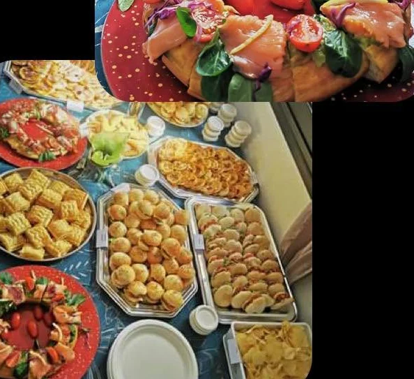
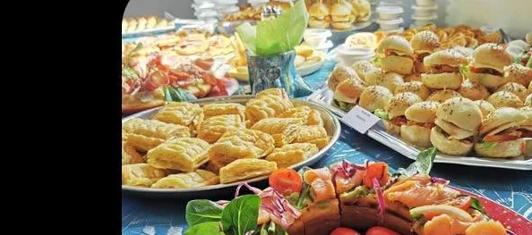
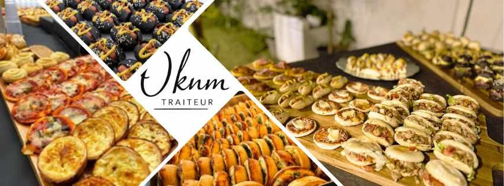
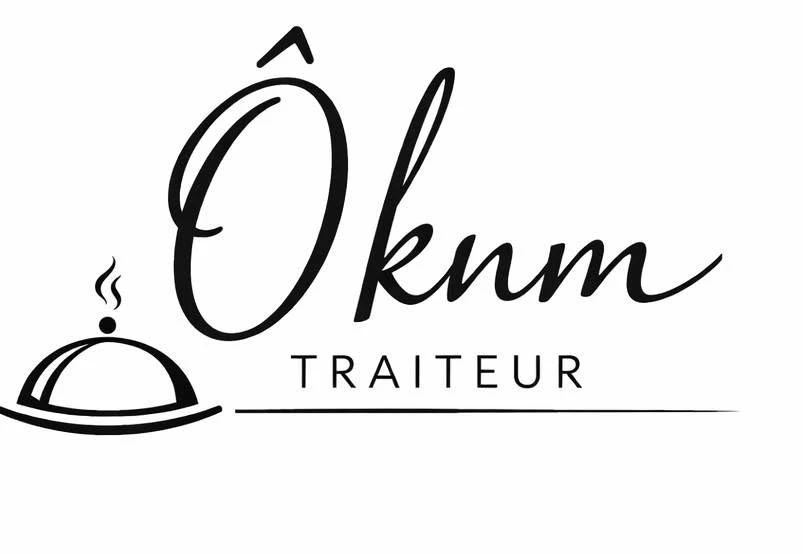

Traiteur · Le Tampon
Pour vos réceptions, vos apéritifs entre amis et tous vos moments conviviaux : des bouchées fines, préparées avec soin, livrées partout sur l'île.

Chez Ô Knm, une philosophie : la qualité avant la quantité.
Pour les fêtes
Une box pleine de gourmandise, de raffinement et de vraies saveurs festives : sept bouchées d'exception, pour régaler vos proches et offrir un moment gourmand.
17,50 € la box · tarif unique
Toute l'année
Des petites pièces salées et sucrées à composer selon vos envies, du plateau apéritif à la grande réception.
Poulet cheddar, bœuf, magret de canard, végétarien…
Dont la quiche aux brèdes et la quiche patate douce.
Tartare de poisson, avocat thon, brochettes de canard ou de camaron.
De la terre, de la mer ou végétarienne, à partager.


Nouveauté
Ô Knm Traiteur continue d'avancer : une carte fidélité et une application pour retrouver toute la maison au même endroit.
Livraison
Livraison sur toute La Réunion, ou retrait sur place au Tampon. Pour une réception, la mise en place et les fournitures se prévoient ensemble, selon le nombre d'invités.
Livraison sur toute l'île · retrait sur place
Un apéritif, un anniversaire, une fête de fin d'année ? Racontez-nous votre envie, on compose la carte avec vous.
